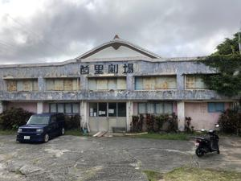
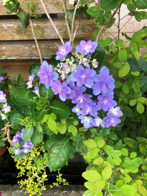
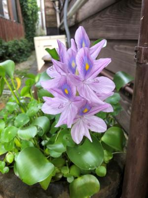

うるがいの話 ある日
最新: 首里劇場【うるがいの話 ある日】とは 一日だけのプログです
『うるがいの話』の最新一日だけのプログで、通信料が少なく経済的だ。カニの画像をクリックすると全ての日付が載る『うるがいの話』サイトを表示します
|
|
【うるがいの話】 うるがい(ｳﾙｶﾞｲ urugai)とは、『もずくがに』の名前でとても大きくなります。 |
|---|---|
|
|
【カミマヤーの話】 猫のことを方言でマヤーといいます。カミマヤー（kamimayaa）とは、神の猫のことです。 |
|
【たながぁの音楽】 たながぁ（ﾀﾅｶﾞｰ tanagaa）とは手長えびのことで、何種類かあり大きいのは車 エビぐらいになります。 |

|
【ぶながぁの話】 ぶながぁ(ﾌﾞﾅｶﾞｰ bunagaa)とは、赤い髪の毛、赤い身体、そして身長は１ｍ２０ｃｍ ぐらい、川の蟹を食べているの目撃された。場所は沖縄県国頭郡大宜味村のと ある村僕の隣近所に住んでいる爺さんから、聞いた話です。 |
|
|
【ギーマの話】 ギーマ(giima)とは、山原の里山に咲くスズランに似た、 花を付けます。実は食べられます、 気が付くと口の周りが紫になっています。 |
2022年06月15日 (水）首里劇場
17:54
 
デジタル新聞の英語の記事で『首里劇場 閉館』を読む。昨日は、珍しく日が
さす天気だったのでバイクで劇場へ行く。首里キャンパスで学生生活をしてい
るとき、学科の仲間から『首里劇場』の話があったが、お金もないので今まで
行ったことが無かった。事前に場所を調べる、いつものジョギングコースの達
磨寺の近く（そもそも間違っていたが）と分かり、夕方家を出た。此処だと思
っていた場所に着くが、ない！。ウン？、スマホで地図を確認する、それを参
考にバイクで・・・、迷子になる。やむを得ず、道を歩く人に聞きまくる。そ
のうち、『この位置からだとかなり離れていますよ、首里公民館の近くまで行
き、また人に尋ねるといいですよ』と言われる。で、教えてくれた情報をあて
に適当にバイクを転がす。で、また人に聞きまくるが、なかなか分かる人がい
ない。で、龍潭池で魚に餌をあげているオジーに尋ねると、直ぐだよと教えて
くれた（ほんとに直ぐ近くだったが）。それでも、１５分ほど迷子になる、最
後は生協の青年に教えてもらい、無事たどり着く。尋ねた人は、老若男女８名
スマホがあればと簡単に行けるという思い込み、またやっちまった。

１７時４９分 ビットコインの総資産 ￥８、００６↓うぇーうぇー